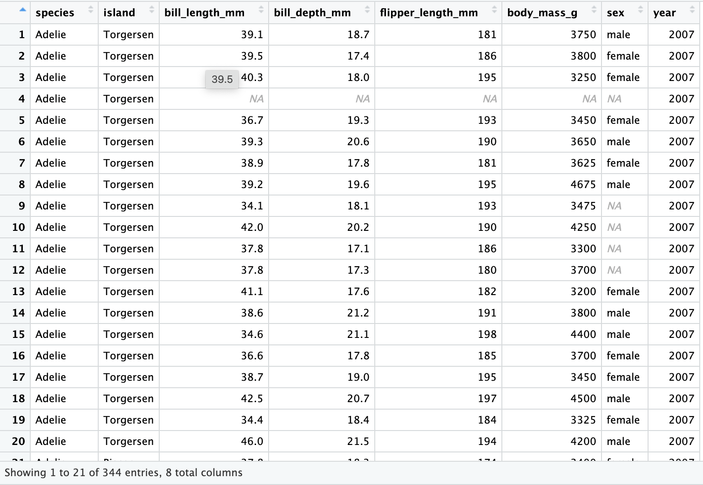
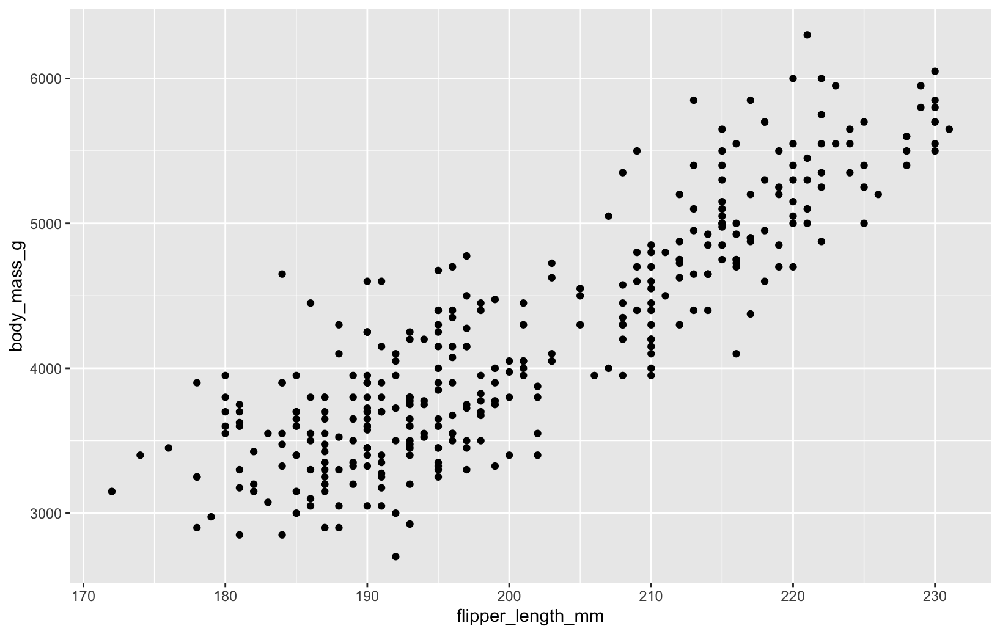
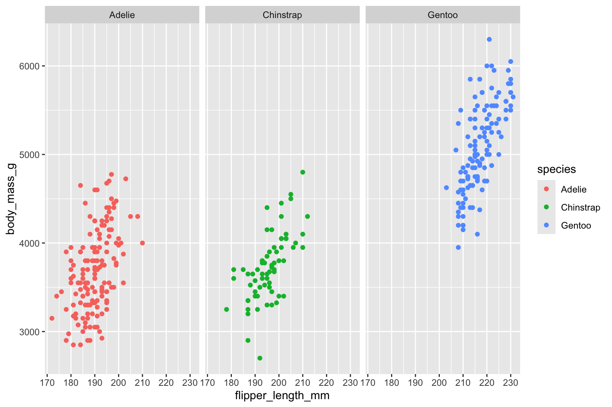
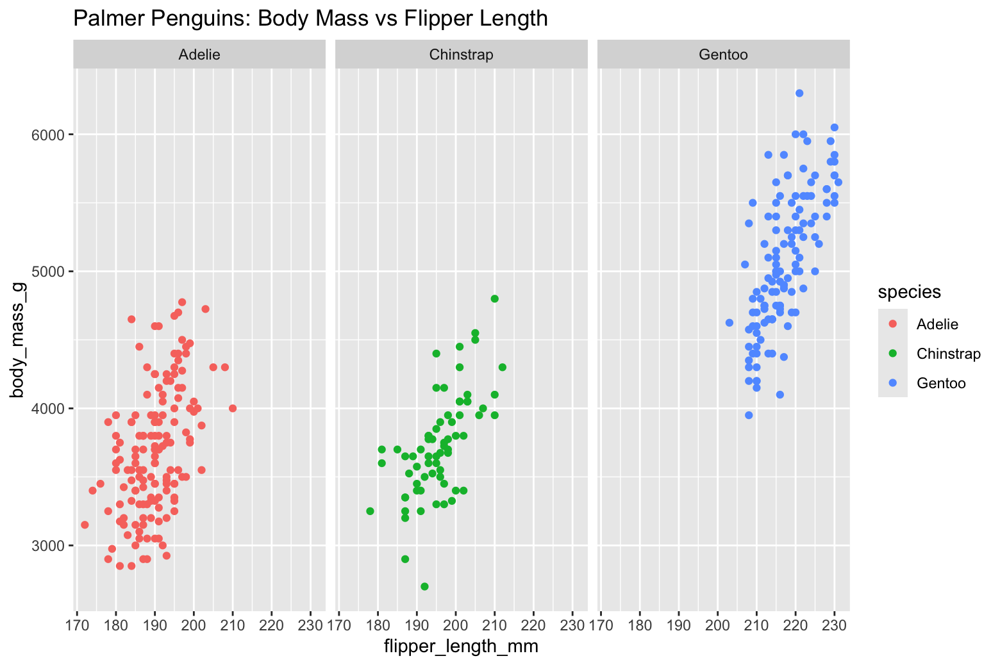

Code
# install.packages("ggplot2")
# install.packages("palmerpenguins")When you click the Render button a document will be generated that includes both content and the output of embedded code. You can embed code like this:
Firts steps installing packages in RStudio
# install.packages("ggplot2")
# install.packages("palmerpenguins")# library(ggplot2)
# library(palmerpenguins)# data("penguins")
# View(penguins)It will appear a dataset as this: 
#ggplot(data = penguins) + geom_point(mapping = aes(x = flipper_length_mm, y = body_mass_g)) The plot shows a positive relationship between the two variables. In other words, the larger the penguin, the longer the flipper.
# ggplot(data = penguins, aes(x = flipper_length_mm, y=body_mass_g)) + geom_point(aes(color=species)) + facet_wrap(~species) to add title to the plot we have to put the code line at the end: labs(title = “Palmer Penguins: Body Mass vs Flipper Length”), that’s going to change from the previous facet to this one.
# ggplot(data = penguins, aes(x = flipper_length_mm, y=body_mass_g)) + geom_point(aes(color=species)) + facet_wrap(~species) + labs(title = "Palmer Penguins: Body Mass vs Flipper Length")